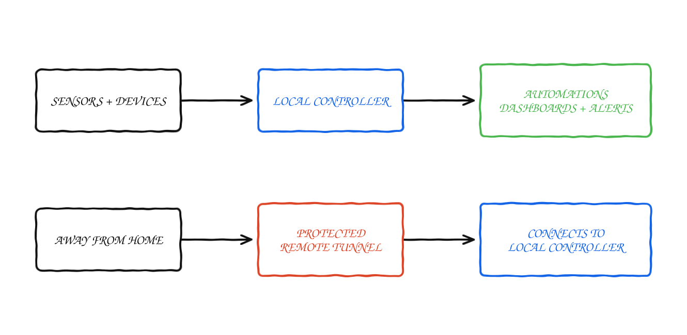

Case study
Home Infrastructure Platform
The small home server setup where I run automations, monitoring and my private AI and finance tools.
Home Assistant / Zigbee / Docker / Proxmox / Cloudflare / Grafana / Linux
Problem
This began as home automation and gradually became a small private platform. It has many of the same problems as a production system—unreliable devices, networking, access control, monitoring and backups—except a bad deployment can also turn off a light somebody is using.
The same platform is also the deployment target for the other local-first systems in this portfolio: the AI assistant and the finance agents run here as isolated containers, next to the home services.
Goals
- Run local-first automations with minimal cloud dependency
- Integrate many device types without creating a maintenance trap
- Expose selected services securely
- Track system health and energy use
- Keep infrastructure understandable enough to repair quickly
Architecture
Local control is the main path. Remote access is optional.

Interesting problems
- How do you design automations that fail safely? Physical fallback and local control matter more than clever triggers.
- How do you keep the system debuggable? Observability and naming conventions are not optional once devices multiply.
- How do you expose access without opening the house to the internet? Use narrow tunnels and minimal public surface.
Lessons learned
- Naming, backups and recovery notes matter once the number of devices starts growing.
- Local control has been more reliable than depending on several vendor clouds.
- I keep automations predictable and leave a physical fallback for anything important.